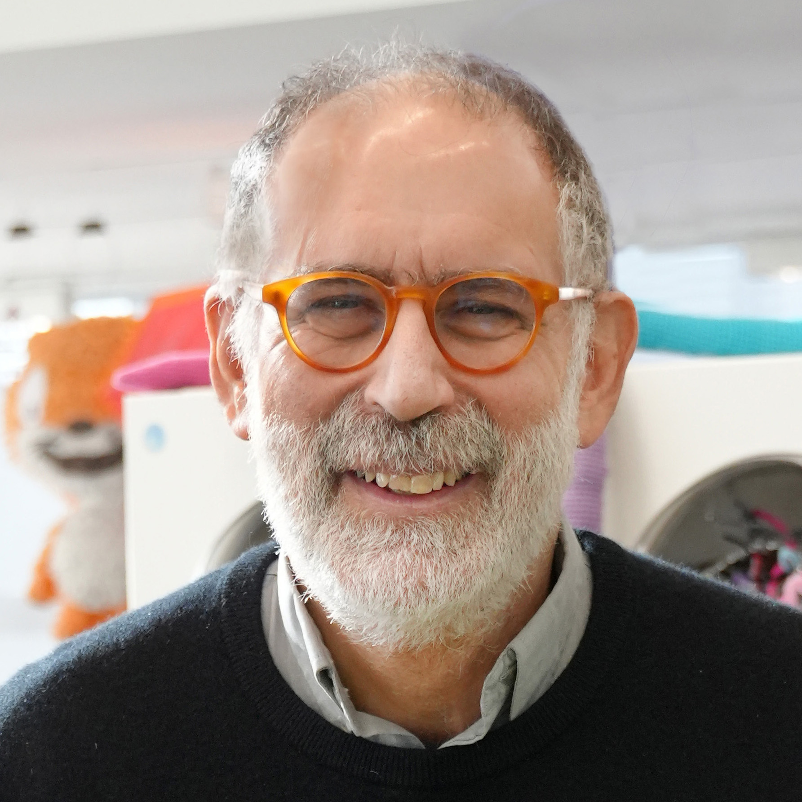
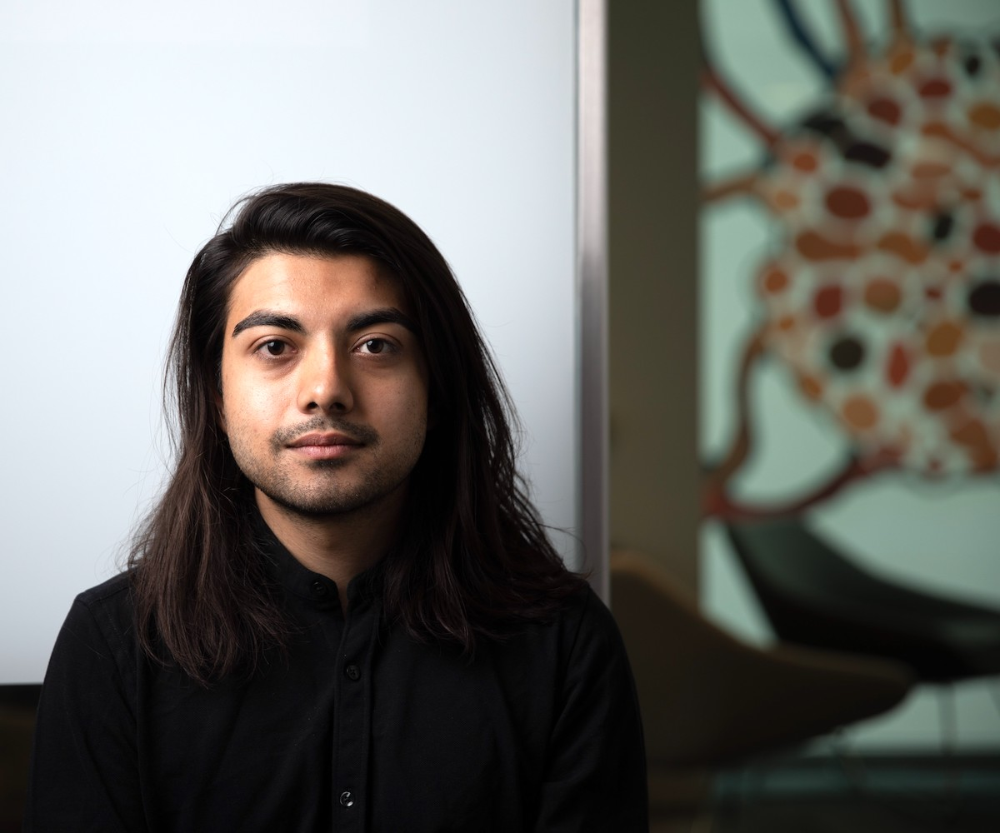

Principal Investigator
Mark Warschauer
Distinguished Professor of Education and Informatics at UCI. Leads project coordination and research activities.
People
Agentic Coding Studio is led by the UCI Digital Learning Lab with expertise across education, informatics, curriculum, research methods, and learning technology.
Research leadership & team
Distinguished Professor of Education and Informatics at UCI. Leads project coordination and research activities.
Professor of Informatics and Education at UCI. Helps lead implementation and research on children’s coding activities in informal learning sites.
Associate Director of the UCI Digital Learning Lab. Supports data management, data sharing, human-subjects approval, and research methods.
Curriculum Director of the UCI Digital Learning Lab. Supports curriculum development and professional development.
CEO of Uplifting Technology and creator of CreatiCode. Collaborates on platform data and iterative improvement of the learning environment.
Research Associate at the UCI Digital Learning Lab, brings expertise in learning design, constructionist education, and human-centered technology.
Research Associate at the UCI Digital Learning Lab, Brings expertise in learning analytics, design-based research, and K–12 learning design.
Advisory Board
Advisory Board member
Advisory Board member

Advisory Board member

Advisory Board member
The page structure is ready for supplied information about research staff, graduate researchers, undergraduate researchers, and additional collaborators.